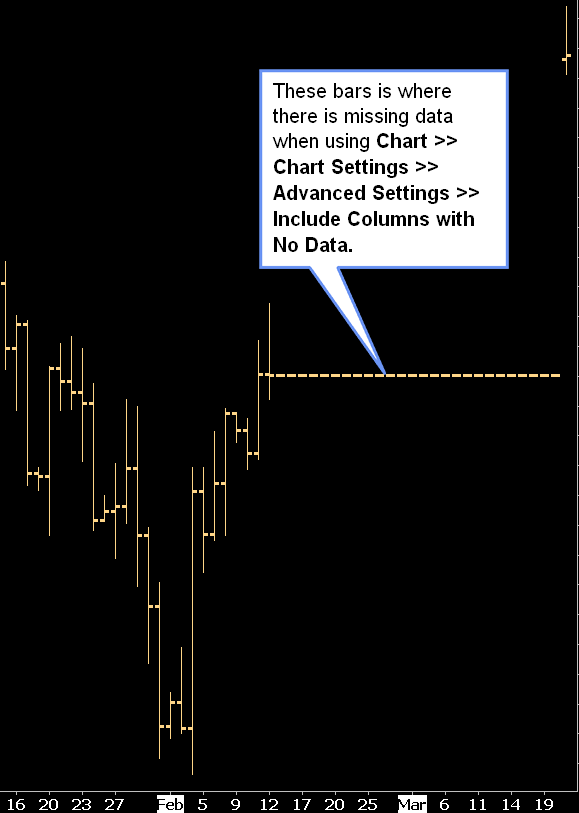

Chart Data and Chart Data Files
- Notes About Chart Data Files
- Renaming Chart Data Files
- Deleting a Chart Data File
- Deleting Market Depth Data File
- Correcting Letter Case of Symbols
- When Intraday Data Files Are Updated
- Volume Data
- Bid Volume and Ask Volume
- Simulate Trades to Match Daily Volume
- Deleting and Re-Downloading Data for Multiple Charts
- Locating Missing Data in Charts
- Large Volume Trades
- Cleaning Up Old and Unused Symbols for Efficiency
- Completeness of Bar Data and Volume in Chart
- Reducing Number of Symbols Being Tracked by Sierra Chart
- The Meaning of the [M] Designation after a Symbol
- Forex Tick Sizes
- Improving Performance of Loading Chart Data (Opens in new page)
Notes About Chart Data Files
Chart data files for both Historical Charts and Intraday Charts are stored in the Sierra Chart Data Files Folder which is set through Global Settings >> General Settings. By default this is the Data subfolder in the folder where Sierra Chart is installed to on your computer system.
Historical daily data files have a dly file extension.
Intraday data files have a scid file extension.
In the case of Intraday data files, they are compressed using the operating system file compression. When you look at these files through the File >> Open Historical/Intraday Chart window or through Windows Explorer, you will notice that the filename is in blue indicating they are compressed. If the filename is in black, then the file is not compressed.
Renaming Chart Data Files
Chart data is stored in files. Each symbol has its own file. These files are called chart data files.
To rename a file, follow these instructions below.
- Disconnect from the data feed by selecting File >> Disconnect on the menu.
- Select File >> Close All Chartbooks on the menu. Press Yes to save if prompted.
- Select File >> New/Open Historical Chart or File >> New/Open Intraday Chart on the menu. Select the specific chart data file for the symbol you want to rename in the list.
- Press the Rename button.
- Type the new symbol. Make sure the file extension still is part of the filename. Historical Daily chart data files use the extension: dly and Intraday data files use the extension: scid.
Example: Stock symbol ABCD has changed to ABC. Rename ABCD to ABC. - Press OK.
- Do this for each chart data file for each symbol you need to rename. When you are done, press the Cancel button on the Open File window.
- After renaming a symbol you will need to change the symbol of your charts that are using the old symbol to the new symbol. To do this, go to the chart, select Chart >> Chart Settings on the menu. Type the new symbol into the Symbol box or select one from the list opened with the Find button. For complete instructions, refer to Changing the Symbol of a Chart documentation page.
- To have your chart drawings (Lines, Rays, Text...) from the prior symbol display on the new symbol, then enable the Show Chart Drawings for Different Symbols option in Chart Settings.
- Press OK to close the Chart Settings window.
- Select Global Settings >> Intraday File Update List on the menu. If you have added the renamed symbols to this list previously, then you need to modify those symbols to the new symbol you are charting. To do this, click on the symbol in the Symbols List, modify the symbol displayed in the Symbol box, do this for each symbol, and press OK when finished.
- Connect to the data feed by selecting File >> Connect to Data Feed on the menu.
Deleting a Chart Data File
- To ensure the chart data file you will deleting does not come back, you first need to do 2 things. Skip this step if you want to keep the charts, but just delete the chart data file in order to get fresh data or for other reasons.
- Select Global Settings >> Intraday File Update List on the menu. If the symbol of the file you want to delete appears on the list, highlight it and press the Delete button.
- Select Window >> Windows and Chartbooks on the menu. From this window look at each Chartbook and see if there is a chart for the symbol you want to delete.
If there is a chart for the symbol, then select it and press OK. This will activate the chart. To remove the chart from the Chartbook, select File >> Close Active Window on the menu. Repeat this step until you no longer find any charts for the symbol you want to delete. - Select File >> Save All to save your Chartbooks after removing the charts.
- Disconnect from the data feed by selecting File >> Disconnect on the menu.
- Close the Chartbooks by selecting File >> Close All Chartbooks.
- Select File >> New/Open Historical Chart or File >> New/Open Intraday Chart on the menu depending upon whether you want to delete a Historical chart data file or an Intraday chart data file.
- Select the symbol in the list of chart data files.
- Press the Delete button to delete the file. Press Yes to confirm.
- Click on Cancel to close the Open File window.
- Connect to the data feed by selecting File >> Connect to Data Feed on the menu.
- Reopen the Chartbooks through the File menu.
Deleting a Market Depth Data File
Sierra Chart maintains historical market depth data when using the Market Depth Historical Graph study. Or when the Record Market Depth Data option is enabled for the Symbol in the Global Settings >> Symbol Settings window.
Follow the instructions below to delete unneeded market depth data files. This may be a good idea to do periodically because these files can use a lot of space on your permanent storage system.
- Determine what the Sierra Chart Data Files Folder path is through Global Settings >> General Settings.
- Disconnect from the data feed by selecting File >> Disconnect on the menu.
- Through your operating system file manager, go to the Sierra Chart Data Files Folder that you determined the path of above. Within that folder there will be a MarketDepthData subfolder. Open that folder.
- All of the market depth data files will be located in there. The file name contains the symbol of the chart and the date of the file. Example: ESM17.2017-04-18.depth. The dates are relative to UTC time. Delete the files that you no longer require.
- After you are done deleting the files, connect to the data feed by selecting File >> Connect to Data Feed on the menu.
Correcting Letter Case Of Symbols
In the case where a Data or Trading service has case sensitivity for Symbols, it is essential that the case of the symbols is correct.
This is not a problem when you choose symbols through the File >> Find Symbol window. If you manually type in symbols, you must make sure the letter case of them is correct according to the symbol specifications for the Data or Trading service you are using.
If you have used an incorrect letter case for symbols, this can cause the market data requests and order submissions to get rejected. This will prevent charts from updating, prevent the quotes on Quote Boards from updating, and cause rejected orders.
Follow the below procedure to correct the letter case of symbols which are incorrect. Generally this is an uncommon issue and is a rarely required procedure.
- Select File >> Disconnect.
- If you have any Quote Boards which are open which contain Symbols with incorrect letter case, then correct the letter case of those Symbols by selecting Settings >> Set Symbols on the Quote Board menu.
- Select Global Settings >> Intraday File Update List. Check all of the symbols in that list, if any, and make sure the letter case of them is correct.
- Select Window >> Windows and Chartbooks on the menu. This window will let you see all of your open Chartbooks and charts within those Chartbooks. Go through each of the open Chartbooks and go to each chart within the Chartbook which has a Symbol which is of the incorrect letter case.
- When a chart that has a Symbol with an incorrect letter case is active, select Chart >> Chart Settings.
- In the Symbol box, choose the correct symbol by pressing the Find button beside it and selecting the correct symbol.
- Press OK.
- It is essential, that every single chart and Quote Board that has a Symbol with an incorrect letter case, has the Symbol corrected to be of the proper case. Otherwise you will continue to have the same problem.
- Select File >> Close All Chartbooks.
- Select File >> New/Open Intraday Chart.
- Rename the listed chart data files, which have an incorrect letter case.
- Select File >> New/Open Historical Chart.
- Rename the listed chart data files, which have an incorrect letter case.
- Select File >> Connect to Data Feed.
When Intraday Data Files Are Updated
Historical data is downloaded to an Intraday chart data file and current trade data is written to the file only when the chart data file is open or the symbol is added to the Intraday File Update List.
When historical Intraday data is downloaded to a chart data file, it is only the data that is missing from the last Date-Time in the file to the present time.
Select Global Settings >> Intraday File Update List on the menu to add files to this list.
If the Data or Trading service Sierra Chart is connected to does not provide streaming real-time or delayed data, then Intraday charts will not automatically be kept up-to-date. This applies to the Sierra Chart Historical Data service . You will need to select File >> Disconnect and File >> Connect to Data Feed to cause a historical data download for the Intraday charts so they will be up-to-date.
Volume Data
Not all symbols from a Data or Trading service will provide historical and real-time volume data. This would include some cash indexes and the Forex and CFD markets. Futures and stock markets will provide historical and real-time volume data.
If a Data or Trading service provides historical volume data for a particular symbol, then it will be available in real-time also for that same symbol.
If the Data or Trading service does not provide historical volume data, then it will not be available in real-time either.
In the case where there is no historical volume data available either historically or in real-time, Sierra Chart will set the volume to 1 for every trade received in real-time. Or in the case of the Forex markets, for every Bid and Ask price received in real-time. This is commonly known as Tick Volume.
When using the Sierra Chart Real-Time and Historical Forex/CFD Data Service and other Forex Data/Trading services, the volume data is Tick Volume where each new Bid and Ask price update received causes the volume to be incremented by 1.
It is a substitute for the lack of actual volume data. Although, it is not true volume data.
To know that an Intraday chart uses Tick volume, add both the Volume and Number of Trades studies to the chart. You will see that they have equal values at each chart bar.
In the case where Sierra Chart is using 1 for volume on the price data received in real-time, you will not see any volume data at all for the bars in the chart downloaded from historical data unless the data comes from the Sierra Chart historical data servers which will be the case for the Sierra Chart Real-time and Historical Forex/CFD Data Service, the Sierra Chart Real-time Exchange Data Feed, and the Denali Exchange Data Feed.
Bid Volume and Ask Volume
Throughout the Sierra Chart documentation and functionality you will see references to Bid Volume and Ask Volume.
Bid Volume is the volume of trades that occurred at the Bid price or lower. Usually this is in relation to the volume for a chart bar.
Ask Volume is the volume of trades that occurred at the Ask price or higher. Usually this is in relation to the volume for a chart bar.
In the case where the trade occurs between the Bid and Ask, it is considered to be at the Bid price, if it traded lower than the price before. Or if it traded at the same price as before, then when looking back through trades, the last time there was a trade at a different price, that trade was down compared to the previous price. The opposite is true if a trade occurs at a higher price and is between the Bid and Ask prices. It will be considered at the Ask if it traded higher than the previous price.
Bid Volume and Ask Volume only are available for Intraday charts. Not for Historical Daily charts.
Bid Volume and Ask Volume volume is not always available historically with all supported Data and Trading services. For more information, refer to Historical Bid Volume and Ask Volume.
In the case of the Forex markets where there are only Bid and Ask prices and not last trade prices, Bid Volume and Ask Volume are determined by comparing the midpoint price, the price between the Bid and the Ask, to the prior midpoint price. If the midpoint price increases, then this is considered an Ask trade and Ask Volume is incremented by 1. If the midpoint price decreases, then this is considered a Bid trade and the Bid volume is incremented by 1.
The determination of Bid Volume and Ask Volume with Data/Trading services that only transmit the Bid price as the last trade price, is not going to be accurate. Most if not all of the volume will be assigned to Bid Volume. This would be true with IQ Feed and OEC. This is not the case with the Sierra Chart Real-Time and Historical Forex/CFD Data Service.
Simulate Trades to Match Daily Volume
For Interactive Brokers, there are simulated trades generated by Sierra Chart in response to Daily Volume messages received from the data feed which are used to make up for missing trades not transmitted by the data feed.
Daily Volume messages for a symbol sent by the data feed indicate the total Daily Volume for the trading day at the current moment. These are frequently sent messages. They may be sent with every trade or sent every few seconds.
When a Daily Volume message is received from the data feed, Sierra Chart calculates the difference between this Daily Volume message and the prior Daily Volume. If the sum of the volumes for the insectionidual trades received since the prior Daily Volume message is less than that needed to match the current Daily Volume message, then a simulated trade is generated with the volume needed to fill in the difference. The price of this simulated trade, is the last trade price received. The volume of this simulated trade, is the quantity of the difference as explained.
This inserted trade will be considered to be at the Bid price if the price of the simulated trade is at the current Bid price or lower. Or it will be considered to be at the Ask price if the price of the simulated trade is at the current Ask price or higher. If it is considered at the Bid, then the volume will be added to the BidVolume for the data record. If it is considered to be at the Ask, then the volume will be added to the AskVolume for the data record.
When using the Interactive Brokers Trading service, this functionality to simulate a trade in order for the Intraday chart volume to match the Daily Volume messages, has shown to cause volume spikes in Intraday charts. Therefore, this can be disabled for Interactive Brokers. To disable this, set Global Settings >> Data/Trade Service Settings >> Service Setting >> Simulate Trades to Match Daily Volume to false.
However, for years, even if you disabled this option, upon reconnecting to the data feed it would be automatically re-enabled and set to true. It is possible to keep this option permanently set to false by updating to version 2152.
Deleting and Re-Downloading Data for Multiple Charts
To delete and re-download data from a particular Date-Time for multiple charts, follow the steps below.
- Select Global Settings >> Customize Chart Shortcut Menu.
- Add the Delete and Download Data-All Charts command to the Selected Menu Items list.
- Press OK.
- Go to a chart and right-click at the Date-Time in the chart where you want to delete and re-download data from.
- Select the Delete and Download Data-All Charts command on the menu.
- Press Yes to confirm. The data will be deleted from that Date-Time in all of the currently open charts and the data will be downloaded if connected to the data feed.
Locating Missing Data in Charts
There can be various reasons why data is missing from Historical or Intraday charts. It is more likely that Intraday charts are affected and much less likely that Historical charts are affected. The most common reason for missing data in a chart is a failed historical data download which can occur for various reasons.
Follow the instructions below to locate missing data in charts, whether they are Historical or Intraday charts.
- Go to the chart.
- Select Chart >> Chart Settings >> Bar Period.
- Enable Include Columns with No Data. Press OK.
- When you have enabled the Include Columns With No Data option, this will insert bars where there is no data in the chart data file for the Date-Time of those inserted bars. The open, high, low, close will all be the same price. These bars will have the same price as the previous closing price. These bars help you to clearly spot where there is missing data in the chart. 
- Use the Tools >> Chart Values Tool tool and the Window >> Tool Values Window to look at the Date-Times of the bars which have been inserted with the Include Columns With No Data option. The Date-Times of these bars is where you have missing data, assuming there was actually trading at those particular Date-Times. Therefore, you must be familiar with the particular market you are trading in order to confirm this.
In the case of Intraday charts, there will not be bars inserted for entire days which are missing. This is something to keep in mind. - Select Chart >> Chart Settings >> Bar Period.
- Disable Include Columns with No Data. Press OK.
- Once you have located that there is missing data, then you can re-download it by right clicking with your Pointing device before the missing data in the chart and select Delete and Download Data. Or select Edit >> Delete All Data and Download from the main menu to re-download all the data in the chart.
{kind=link}
Large Volume Trades
This section provides a discussion of why large volume trades cannot be identified and when they are identified, they do not have any definite significance.
- First and foremost, a large trade does not fill all at once. An order for 100 contracts likely will fill in many smaller orders as it is matched with smaller orders. It is unlikely that there is going to be a matching 100 contract order to fill it. Therefore, the activity of large traders, simply cannot be tracked. Combining trades of the same side, the same time and same price is also not a reliable means to detect a large trade.
- Since a large trade matches up with multiple smaller orders, there can be different fill prices which makes the ability to detect these types of trades even more difficult and impossible. Even the Sierra Chart Exchange Data Feed which effective July 2017, has the ability to combine smaller CME trades into a single larger trade based upon exchange data, does not combine the smaller sub trades at different price levels into a large trade. The combining only works at the same price because the exchange reports these trades at different prices as separate trade summaries.
- A large trader may enter a series of smaller orders. For example, if they want to sell 100 contracts, they can enter 100 orders of 1 lot each very simply using a computer program. This could be part of a high-frequency trading strategy. Making it impossible to even identify the large order to begin with. And as we indicated in the previous items, it is still not possible to reliably identify a large order in many cases.
- You have no idea why a large trader is entering the order that they are. It is not a predictive of short-term price movement. There can be numerous reasons.
- For every order there is both a buyer and a seller. So in the case where you see a large order go through, what does it mean? Can you answer this question definitively? If not, then obviously the trade in and of itself, does not mean much of anything.
- You have no idea as to the timeframe the large trader is trading in. It could be 5 minutes, or it could be 3 months. Although in the short-term, a position they put on may be a loss, it could be a profit over a longer timeframe.
- The trade could be part of a hedge. They could be taking an opposite trade in some other market.
- The exchange, the data feed, or the program you are running, could be combining multiple trades into one making it seem as though there was a large trade, when there was not. For example, when using Interactive Brokers and you have enabled Global Settings >> Data/Trade Service Settings >> Simulate Trades to Match Daily Volume (we recommend this be enabled), you will see large trades appear in the Time and Sales occasionally, which are not actually high-volume trades but an insertion of volume to make the Intraday volume match the Daily reported volume. This is necessary with the Interactive Brokers data feed. Otherwise, you would notice the trading activity in the chart to be sparse.
- In summary, relying upon large trades, does not come across as reliable and is misleading. Traders who pay attention to large trades as being meaningful in the futures market, generally are going to be inexperienced traders who do not know how the markets work.
Additionally, the concept of identifying large trades is based upon the idea that a large trader is "smart" and knows what is going to happen in the future. Nobody can definitively predict the future unless they are planning something at a future point in time to move the market. They very well could be planning to move the market and are part of an organization with large sums of money, most likely banks, which are capable of moving the market.
The problem is, it is not possible to identify their activity to begin with, at least not always, and exactly when that move will occur.
Instead of paying attention to large trades, we recommend using the Cumulative Delta Bars studies found in Analysis >> Studies. These studies provide an objective analysis of buying pressure and selling pressure over a period of time.
Also, it would seem to be more useful to be looking at increases in volume over a period of time and the direction the market is moving in during that increase. What exactly this means, is not the purpose of this discussion. This is up to you to determine and to determine if this is even useful to begin with.
Cleaning Up Old and Unused Symbols for Efficiency
To avoid market data requests and historical data downloading for symbols that you no longer use or have expired, it is a good idea to clean them up from your Sierra Chart Chartbooks and other features of Sierra Chart which contain symbols.
Follow the steps below to do this.
- Select Window >> Windows and Chartbooks on the menu. From this window look at each Chartbook and see if there is a chart for an old/unused symbol.
If there is, then select it and press OK. This will activate the chart. To remove the chart from the Chartbook, select File >> Close Active Window on the menu. Repeat this step until you no longer find any charts for old/unused symbols. - Using the method above, iterate among all of your charts, you can also access the charts through the CB and CW menus at the top of the main window, and check the Chart >> Associated Watch List for each chart and remove any old symbols from those lists.
- Look among the Quote Boards and remove any old/unused symbols through Settings >> Set Symbols on the Quote Board menu. If you cannot see a Quote Board and you know that you have one within the current open Chartbook, then you can set it to a default position by selecting Window >> Reset Windows.
- Select Global Settings >> Intraday File Update List. Remove any old/unused symbols from that list.
- Select Window >> Alerts Manager . Select the Symbol Alerts tab. Right-click your Pointer on the lines for any old/unused symbols and select Delete.
- Select File >> Disconnect.
- Select File >> Connect to Data Feed. This will cause Sierra Chart to no longer track the old/unused/expired symbols which you have removed with the steps above.
- Delete the chart data files that are no longer needed. Refer to Deleting Chart Data File.
- Delete the older market depth data files (.depth file extension) that you no longer require. Each market depth data file has the symbol and date in its file name. So you can tell which date and symbol it is for. These files do consume a lot of storage space.
Through your operating system file manager, go to the MarketDepthData subfolder within the Data Files Folder.
The file names contain a date in them which represents the date the file is for. Delete the files in that folder that you no longer require.
{kind=link}
Completeness of Bar Data and Volume in Chart
The completeness of the chart bars and volume in a chart depends upon the particular Data/Trading service being used, the symbol and the particular point in time the chart bar is for.
In the case of a futures contract, the data at a particular point in time for a chart bar and the volume for that bar depends upon the contract month and year, and whether that particular contract is actively traded at that time.
Also, a futures contract which is just not actively traded at any time, will contain much less data compared to an actively traded futures contract.
For an actively traded futures contract, to ensure that for every bar in the chart you are looking at the most active contract year and month and see complete data, use the Continuous Futures Contract feature.
After reading the above information, if you still believe there is incomplete data in a chart, then for Intraday charts refer to the Historical Intraday Data page. In the case of Historical charts, refer to the Missing Historical Chart Data page.
Reducing Number of Symbols Being Tracked by Sierra Chart
When connected to the real-time data feed in Sierra Chart, Sierra Chart will begin real-time streaming data updates for the symbols in Charts, Trade DOMs, Quote Boards, Quote Spreadsheets, the Intraday File Update List, and Symbol Alerts.
To determine how many symbols Sierra Chart is currently tracking from the connected data feed, refer to the Status Bar page.
If a symbol is no longer being used in one of these objects or the object has been closed, Sierra Chart will continue to track that symbol until you reconnect to the data feed.
Tracking too many symbols can cause a problem where when you have a symbol limit with the real-time data feed being used, that you end up exceeding the symbol limit.
When the symbol limit has been exceeded, you need to reduce the number of symbols being currently used, in order to receive real-time data for the symbols which have gone over the limit.
This involves any of the following:
- Closing Chartbooks.
- Closing Charts. You can find these on the CW menu on the main window and then close each one with File >> Close Active Window.
- Closing Trading DOMs. You can find these on the CW menu on the main window and then close each one with File >> Close Active Window.
- Closing or reducing the number of symbols in Quote Boards.
- Closing or reducing the number of symbols in Quote Spreadsheets.
- Reducing the number of symbols in the Global Settings >> Intraday File Update List.
- Removing Symbol Alerts from the Window >> Alerts Manager >> Symbol Alerts.
- Unchecking the Global Settings >> General Settings >> Detect Rollover of Current Futures Contract Symbols Based on Real-time Volume option. The reason this option should be unchecked is because within approximately two days of when a futures contract is expected to roll over, there is a request for real-time data for the next futures contract symbol increasing the symbol count by 1 for each futures symbol being used.
- If you are running any sub instances of Sierra Chart (File >> New Instance), make sure you reduce the number of symbols in those sub instances as well according to the above items.
When you have completed any of the above, follow the instructions to Reconnect to the Data Feed to reduce the number of symbols subscribed to from the real-time data feed. You will also need to reconnect to the data feed in any running sub instances as well.
The Meaning of the [M] Designation after a Symbol
On the title bar of the chart, in the Region Data Line and other places where a Symbol is displayed, the Symbol may have a [M] designation after it.
This means that Symbol is remapped to an alternate data feed and not the primary data feed Sierra Chart is connected to. Sierra Chart supports multiple data feeds with separate connections. The letter M is from the word map.
When using the Denali Exchange Data Feed, or any of the other real-time or delayed data feeds provided by Sierra Chart, those symbols will always have the [M] designation after the symbol. It is an indication, the market data request is being internally mapped to a dedicated connection, to the particular server providing the market data.
For example, when accessing EUREX data, there is a connection to Frankfurt. When accessing CME data, there is a connection to Chicago. When accessing the NASDAQ data there is a connection to New York. Sierra Chart maintains multiple connections to the lowest latency connection point. There is not one central server serving all of the data. There are many. This is a distributed architecture.
When using a sub instance of Sierra Chart through File >> New Instance, all data originates from the main instance of Sierra Chart. So in no case will you see the [M] indicator on the chart after the symbol. This is completely normal. It is just enough that you see it in the main instance of Sierra Chart for the symbol.
Forex Tick Sizes
In the cash Forex markets like FXCM and LMAX provide trading services for, there is no standard Tick size for a particular Forex pair, at least among the different liquidity providers and exchanges. In the case of the EURUSD and other Forex markets, trading can be to an increment as small as .00001.
In these cases, by default, Sierra Chart will use a Tick Size of .00005 in the Chart Settings. The smaller Tick Size is not used in order to not increase CPU usage for studies that use Volume at Price data and perform calculations using that data.
Otherwise, the CPU usage will be considerably higher and can also cause Sierra Chart to freeze at times during calculations which are done on the primary thread. This includes studies like the Volume by Price study.
*Last modified Monday, 06th March, 2023.